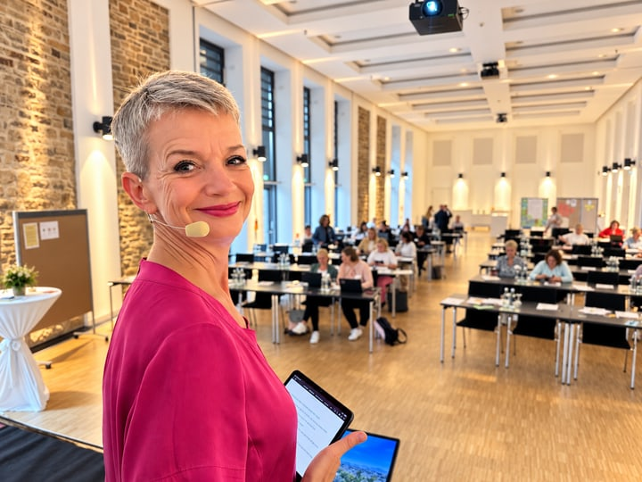

Ziel & Zielgruppe
Zielklärung, Zielgruppenanalyse und eine ehrliche Antwort auf die Frage: Was soll dieser Tag bewirken?
Konferenzentwicklung für Inhouse-Konferenzen
Sie bringen Anlass, Ziel oder Problem. Ich verbinde Zielgruppe, Inhalte, Speaker, Dramaturgie und Teilnehmerweg zu einer Konferenz, die im Raum funktioniert – und danach weiterwirkt.

Ein guter Anfang
01 Wir haben Anlass und Termin – aber noch keine klare Idee.
02 Wir haben viele Themen – aber noch kein schlüssiges Programm.
03 Wir wollen Menschen erreichen – ohne sie mit Vorträgen zu überrollen.
Von der ersten Frage bis zum Feedback
Ich kann die inhaltliche Gesamtverantwortung übernehmen oder dort einsteigen, wo Ihre internen Ressourcen enden. Der Umfang wird vor Projektstart klar vereinbart.
Zielklärung, Zielgruppenanalyse und eine ehrliche Antwort auf die Frage: Was soll dieser Tag bewirken?
Ein roter Faden, der Themen, Formate, Tempo, Beteiligung und Pausen sinnvoll miteinander verbindet.
Auswahl, Ansprache, Honorarabstimmung, Briefing und Führung der Speaker – inklusive Verantwortung für das Speaker-Budget.
Vorbereitung, Moderation und, wenn gewünscht, die operative Steuerung von Programm, Speakern und Partnern vor Ort.
Eine passende Konferenzwebseite oder App, die Anmeldung, Auswahl, Orientierung und Feedback einfach macht.
Bei Bedarf Auswahl und Steuerung der Technik sowie transparente Budgetverantwortung für Speaker und Technik.
Digital, wo es wirklich hilft
Die Konferenzwebseite oder App erscheint selbstverständlich in Ihrer Corporate Identity. Für Teilnehmende entsteht eine klare, persönliche Ansicht; für Ihr Team ein verlässlicher Überblick.
Klare Verantwortung
Mein Schwerpunkt sind die inhaltliche Konzeption und die Menschen: Was brauchen sie, wer erreicht sie und wie wird aus einzelnen Programmpunkten ein stimmiger Tag?
Gern arbeite ich mit Ihrem internen Team oder Ihren bestehenden Veranstaltungspartnern zusammen.
Vom Auftrag zur Auswertung
Jede Phase endet mit einem abgestimmten Arbeitsergebnis. So bleiben Entscheidungen, Zuständigkeiten, Budgets und nächste Schritte für alle Beteiligten sichtbar.
Zusammenarbeit ohne Systembruch
Ich stelle mich auf die Werkzeuge ein, die Sie bereits nutzen – ob Microsoft 365 mit Copilot, Google Workspace oder Ihr Projektmanagement-System. Wo es hilft, strukturieren wir Aufgaben und Entscheidungen mit Kanban.
Jederzeit transparent.Alle Beteiligten haben von überall Einblick in den aktuellen Stand. Das spart Unsicherheiten, Dateiversionen und Rückfragen.
Ziel, Zielgruppe, gewünschte Wirkung, Rahmen und Verantwortlichkeiten sind geklärt.
Leitidee, Themen, Dramaturgie, Formatmix und Entscheidungsgrundlagen stehen.
Auswahl, Briefings, Ablaufplanung sowie Speaker- und Technikbudget sind verlässlich geführt.
Webseite oder App, Anmeldung, Trackwahl, Kommunikation und Wartelisten sind einsatzbereit.
Moderation und operative Steuerung verbinden Speaker, Technik und Teilnehmende im Raum.
Rückmeldungen pro Session oder für die gesamte Veranstaltung werden sichtbar und nutzbar.
Referenz in Vorbereitung
Für dieses Projekt ist hier bereits Raum reserviert. Ausgangslage, Konferenzkonzept und Umsetzung ergänzen wir, sobald die Referenz freigegeben ist.
folgt
Kurz geklärt
Nein. Mein Schwerpunkt sind die inhaltliche Konzeption, die Menschen und die Wirkung der Konferenz. Location und Catering bleiben bei Ihnen oder Ihren Veranstaltungspartnern.
Nein. Sie können einzelne Bausteine oder die Gesamtverantwortung für Inhalt, Speaker, Teilnehmerweg und Durchführung beauftragen. Im Erstgespräch klären wir, was intern bereits gut abgedeckt ist.
Je nach Bedarf erhalten Sie eine Konferenzwebseite oder App in Ihrer Corporate Identity mit Anmeldung, Trackwahl, Merkliste, persönlicher Ansicht, Umbuchung, Stornierung, Wartelisten und Feedback. Alle Informationen laufen zentral zusammen – statt in Excel-Listen, Forms-Abfragen und mehreren Dateiversionen. Das spart Zeit und schenkt jederzeit Klarheit.
Ja. Wenn gewünscht, moderiere ich die Konferenz und übernehme die operative Steuerung des Programms, der Speaker und der beteiligten Technikpartner vor Ort.
Bei Bedarf übernehme ich die Auswahl und Steuerung der Technik sowie die Budgetverantwortung für Speaker und Technik. Der genaue Rahmen wird vor Projektstart transparent vereinbart.
Nein. Ich stelle mich auf die Werkzeuge ein, die Sie bereits nutzen – zum Beispiel Microsoft 365 mit Copilot, Google Workspace oder Ihr Projektmanagement-System. Wo es hilft, strukturieren wir Aufgaben und Entscheidungen mit Kanban. So haben alle Beteiligten von überall Einblick in den aktuellen Stand. Das spart Unsicherheiten, Dateiversionen und Rückfragen.
Der erste Schritt
Erzählen Sie mir, was Sie vorhaben. In einem kostenfreien 30-Minuten-Gespräch klären wir, was Ihre Konferenz braucht und ob ich die Richtige dafür bin.
30 Minuten buchen